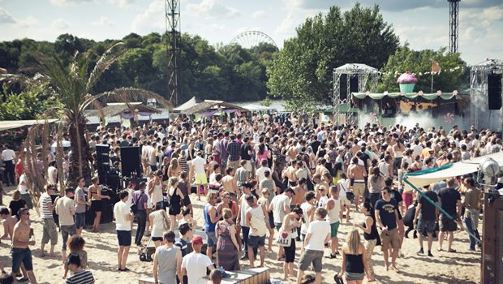

Diynamic & Watergate pres. Diynamic Open Air – Rummelsburg, Berlin


While Germany has recently emerged from one of the greyest, bleakest winters it’s suffered in decades, when summer hits in Berlin, it really hits proper. Scorching through temperatures that climbed as high as 35 degrees in the leadup to the weekend, by Saturday luckily it had dropped to a much more gentle, breezy 20 degrees or so – making it an absolutely sublime day for the iconic Watergate Club to launch its open-air series in the Rummelsburg district in the city’s east.
Watergate had a total of four open-air parties lined up for over the summer, with the remaining three hosting showcases from heavy-hitters Circoloco, Innervisions as well as Richie Hawtin. Saturday though saw the Diynamic Music crew taking control; arguably one of the most influential and widely discussed labels working in underground dance at the moment.
Man-of-the-moment Solomun was fresh from opening his new high-profile residency at Pacha Ibiza, while the label itself had launched its very first Diynamic Festival in Amsterdam only a few weeks ago. While the Rummelsburg event was more of an intimate and low-key affair than their first Holland adventure, ultimately it ended up blowing that party out of the water, in terms of being an absolutely flawless and unforgettable day in the sun.
For a city so far inland, Berlin sure does go to extreme lengths to convince itself that it’s a sandy, coastal paradise during the summer months. Venues like Club Der Visionaere and Badeschiff make full use of their riverside locations, though Rummelsburg has to be one of the most perfect open-air locations you could enjoy anywhere in the world. Sand is under your feet everywhere you go, with the mainstage situated a big, wide-open and very comfortable area flanked by bars and the occasional podium platform; not to mention flawless, crystal-clear sound made possible by speakers strategically circling the dancefloor.
Upon arrival in the late afternoon H.O.S.H was laying an extremely polished and groove-heavy set, that was neatly positioned in that inviting Diynamic realm between techno and deep house, with the tougher grooves reflective of setting basically insisting that there was no time for messing around. A glorious energy had already set in by this stage, with a relaxed and good-looking crowd who were definitely there to dance and have fun.
And brief a walk down the sandy pathway at the back of the dancefloor opens up to the second stage, positioned right on the river’s edge. Dancing under the shaded canopy offered by the trees and facing the water, the spot is just impossibly beautiful, though also uber-relaxed in terms of feeling like a cruisy campsite where the organisers might have spontaneously decided to set up a couple of speakers. Diynamic young gun David August was given two hours to work his magic at dusk, and he took full advantage of the more lowkey nature of the second stage, focusing on some slower, sexier grooves that where warmly received by the crowd.
Back at the mainstage and Diynamic veteran Stimming was tasked with providing a live hour of warmup for Solomun. He played a mixture of his classics as well as plenty of cuts off his latest self-titled album, though in a similar fashion to his set in Amsterdam a month ago, his performance was oddly lacking in energy. With the weather still out in glorious force, it made for somewhat of a stark shift from the more direct thrills H.O.S.H had been offering earlier.
The same most definitely couldn’t be said for Solomun’s closing two hours though. Over the past year he’s transformed into a commanding figure whose draw is powerful enough to warrant multiple residencies on the White Isle. While at the Diynamic Fesitval in Amsterdam he’d played a crowd-leasing party set that make it clear why Pacha Ibiza’s organisers had confidence he’d be able to fill the club, last Saturday in Berlin, Solomun was playing to a much more intimate crowd who where receptive to pretty much whatever he decided to throw at them.
Fittingly, the set was focused a lot less on the anthems and vocals, and much more on the driving grooves, with a breatheless and immaculately-crafted set that didn’t let up for a second. The first hour was mostly comprised of more upfront and obscure records, with Solomun keeping the focus on the driving energy that kept everybody’s hands in the air, rather than slowing it down too much in the direction of funk, disco or hip hop. However, slamming into crowd-pleasing vocals of Andhim’s infectious mix Wine and Chocolates showed just how precisely tuned he is into knowing the perfect time to drop in an anthem.
Moving right through to his regular set closer, his fairly epic remix of Foals Late Night, the crowd had been in the hands of a confident professional who has clearly mastered his craft. There was a moment during the two hours, as the sun was setting to our left over the river, the entire dancefloor in rapture, when my friend turned to me commented; “This is about as good as it gets”. And it was too true; with the perfect combination of setting, music curation plus a blessing from the weather gods, the remaining Watergate open-air events will be keenly awaited.